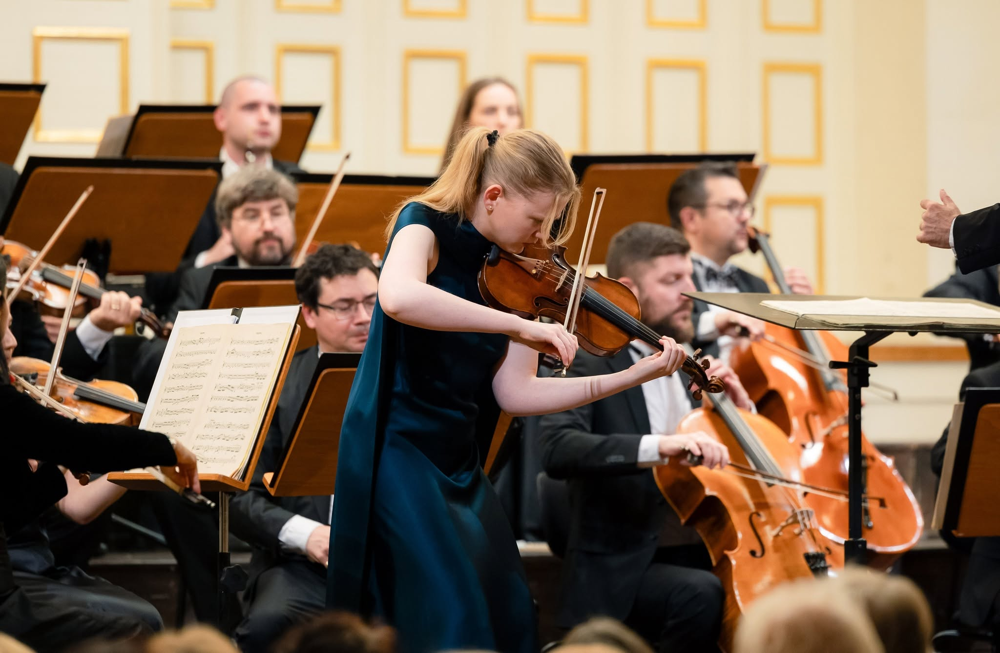
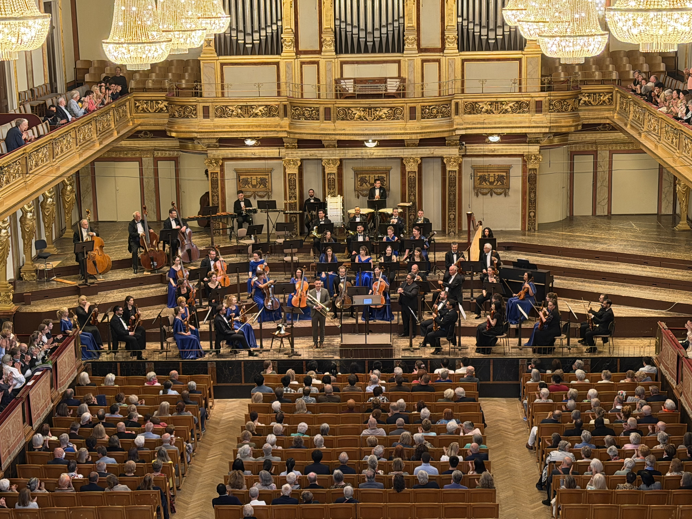
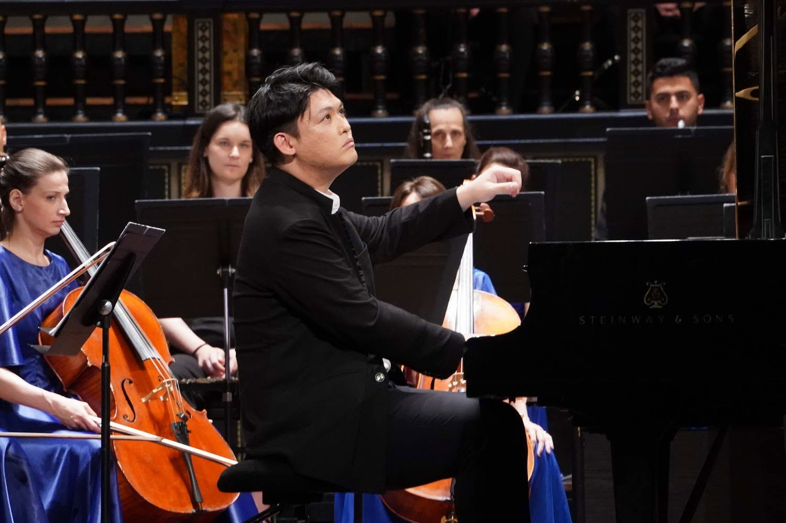
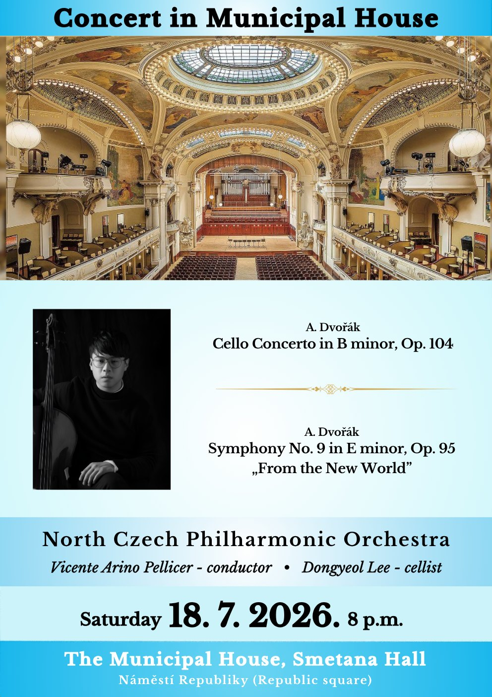
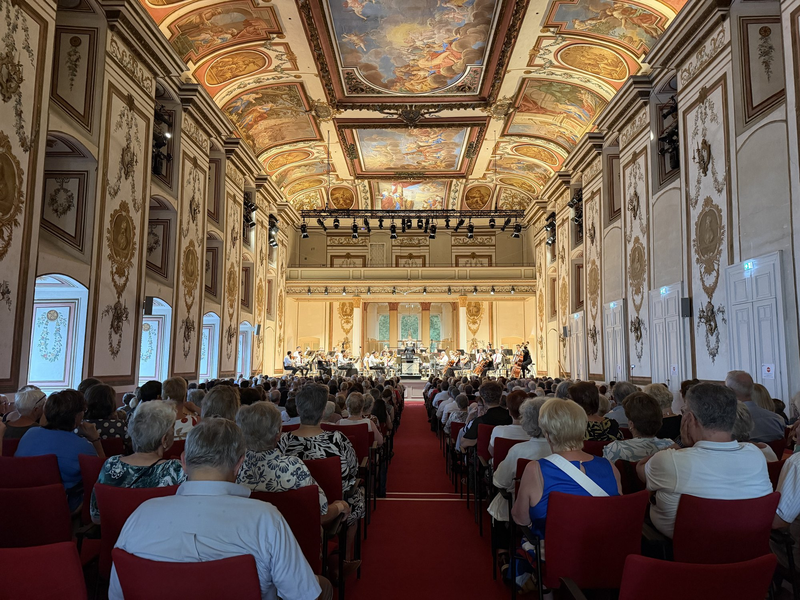
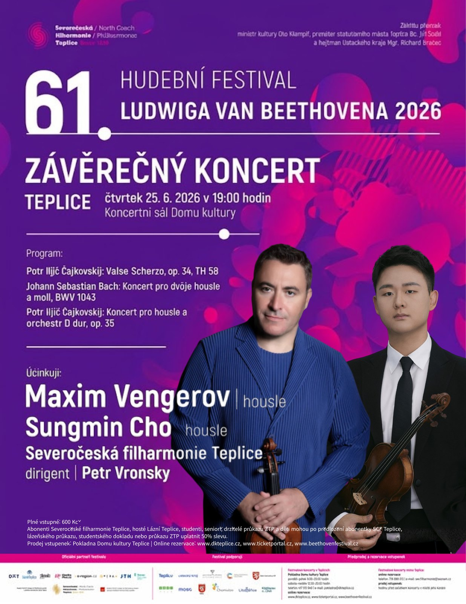
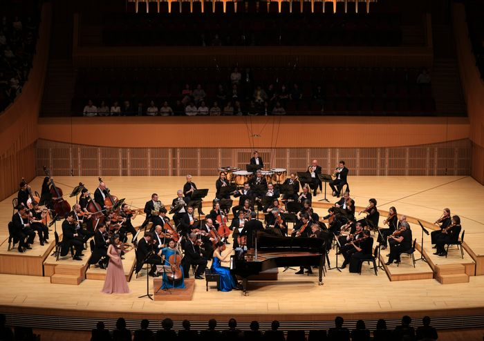
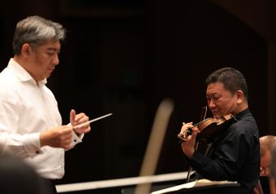
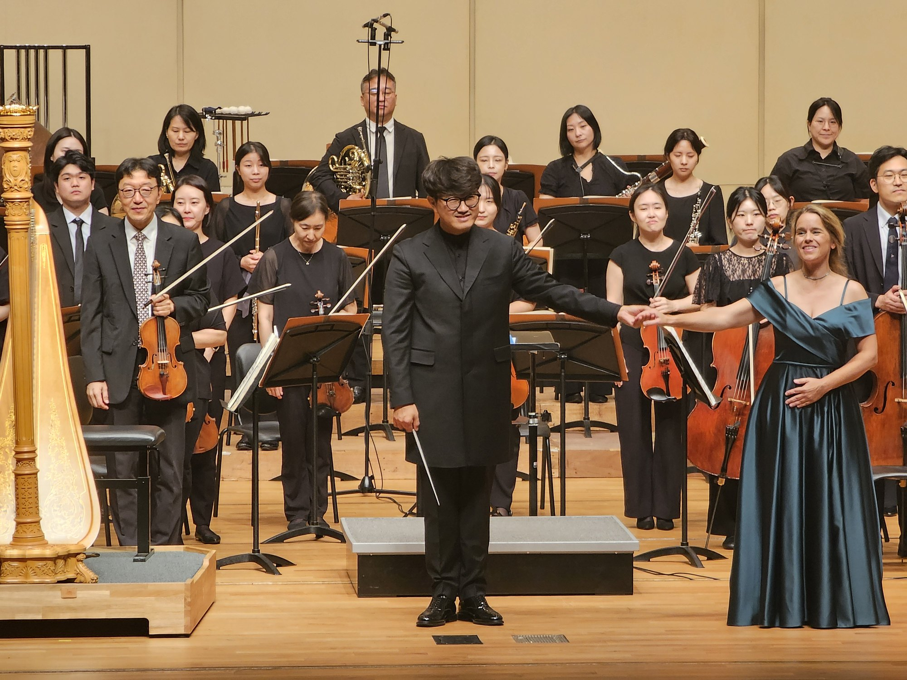

Reporting from the concert life running between Europe and Korea — the news, the tours, and the full archive.

On 7 June, IMK presented a Schwingungen concert at the Großer Saal of the Mozarteum in Salzburg. Kronberg Academy violinist Charlotte Spruit performed Mozart's Violin Concerto No. 1 in B-flat, K.207, with the Sofia Philharmonic under Nayden Todorov — in the composer's birthplace.
Read more →
The 58th Schwingungen Scholarship Concert, presented with the Gustav Mahler Private University, brought young trombonist Martin Felsberger to Vienna's Musikverein. He performed Tomasi's Trombone Concerto with the Hungarian State Symphony Orchestra of Szolnok under Manuel Tévar in one of the world's most storied halls.
Read more →
On 3 June, IMK and the Manhattan School of Music presented an international collaborative concert at the Liszt Hall of the Franz Liszt Academy in Budapest. Pianist Yan Fang performed Liszt's Piano Concerto No. 1 in E-flat with the Hungarian State Symphony Orchestra of Szolnok under Manuel Tévar, in a programme spanning Vivaldi to Mendelssohn.
Read more →
Korean cellist Dongyeol Lee made his European debut at Prague’s Smetana Hall, performing Dvořák’s Cello Concerto in B minor, Op. 104 with the North Czech Philharmonic under Charles Olivieri-Munroe — on a programme completed by the New World Symphony.
Read more →
At the Haydn Hall of Esterházy Palace, IMK and mdW’s Classical Bridge gave four young conductors — Sophia Khutsishvili, Tobias Treitner, Fabio Felsberger and Ángela Valera-Casanova — the podium with the Szolnok Symphony Orchestra, in a programme spanning Weber, Mozart and Mendelssohn.
Read more →
The 61st Ludwig van Beethoven Music Festival closed in Teplice with the North Czech Philharmonic under Petr Vronský. Korean violinist Sungmin Cho shared the stage with Maxim Vengerov — the two joining forces in Bach’s Concerto for Two Violins, BWV 1043 — before Vengerov closed the festival with the Sibelius concerto.
Read more →
The Finest of German Music Meets Korea’s Leading Artists. At the Lotte Concert Hall, an all-Beethoven programme — the Coriolan Overture, the Triple Concerto with violinist Kyung Sun Lee, cellist Meehae Ryo and pianist Soyeon Kang, and the Fourth Symphony. “From the first note to the final applause, we felt a genuine connection with the audience,” said conductor Adrian Prabava.
Read more →
One of Germany’s most distinguished orchestras brought an all-Beethoven programme to Daejeon for its first concert in Korea — the Coriolan Overture, the Violin Concerto and the Fourth Symphony. Founded in 1924, the Stuttgart Philharmonic chose repertoire that leaves an orchestra nowhere to hide, and a soloist who played Op. 61 as an argument rather than a display. “He is a musician who understands the essence of music,” said conductor Adrian Prabava afterwards.
Read more →Korean cellist Dongyeol Lee made his European debut at Prague’s Smetana Hall, performing Dvořák’s Cello Concerto in B minor, Op. 104 with the North Czech Philharmonic under Charles Olivieri-Munroe — on a programme completed by the New World Symphony.
Read more →
The Gunpo Prime Philharmonic’s 133rd subscription concert paired the world premiere of Woojung Choi’s Boheoja Resounds and Boieldieu’s Harp Concerto — with harpist Mirjam Schröder — against the dramatic sweep of Tchaikovsky’s Fourth Symphony, under conductor Hanhun Song.
Read more →At the Haydn Hall of Esterházy Palace, IMK and mdW’s Classical Bridge gave four young conductors — Sophia Khutsishvili, Tobias Treitner, Fabio Felsberger and Ángela Valera-Casanova — the podium with the Szolnok Symphony Orchestra, in a programme spanning Weber, Mozart and Mendelssohn.
Read more →The 61st Ludwig van Beethoven Music Festival closed in Teplice with the North Czech Philharmonic under Petr Vronský. Korean violinist Sungmin Cho shared the stage with Maxim Vengerov — the two joining forces in Bach’s Concerto for Two Violins, BWV 1043 — before Vengerov closed the festival with the Sibelius concerto.
Read more →On 7 June, IMK presented a Schwingungen concert at the Großer Saal of the Mozarteum in Salzburg. Kronberg Academy violinist Charlotte Spruit performed Mozart's Violin Concerto No. 1 in B-flat, K.207, with the Sofia Philharmonic under Nayden Todorov — in the composer's birthplace.
Read more →The 58th Schwingungen Scholarship Concert, presented with the Gustav Mahler Private University, brought young trombonist Martin Felsberger to Vienna's Musikverein. He performed Tomasi's Trombone Concerto with the Hungarian State Symphony Orchestra of Szolnok under Manuel Tévar in one of the world's most storied halls.
Read more →On 3 June, IMK and the Manhattan School of Music presented an international collaborative concert at the Liszt Hall of the Franz Liszt Academy in Budapest. Pianist Yan Fang performed Liszt's Piano Concerto No. 1 in E-flat with the Hungarian State Symphony Orchestra of Szolnok under Manuel Tévar, in a programme spanning Vivaldi to Mendelssohn.
Read more →The Finest of German Music Meets Korea’s Leading Artists. At the Lotte Concert Hall, an all-Beethoven programme — the Coriolan Overture, the Triple Concerto with violinist Kyung Sun Lee, cellist Meehae Ryo and pianist Soyeon Kang, and the Fourth Symphony. “From the first note to the final applause, we felt a genuine connection with the audience,” said conductor Adrian Prabava.
Read more →One of Germany’s most distinguished orchestras brought an all-Beethoven programme to Daejeon for its first concert in Korea — the Coriolan Overture, the Violin Concerto and the Fourth Symphony. Founded in 1924, the Stuttgart Philharmonic chose repertoire that leaves an orchestra nowhere to hide, and a soloist who played Op. 61 as an argument rather than a display. “He is a musician who understands the essence of music,” said conductor Adrian Prabava afterwards.
Read more →